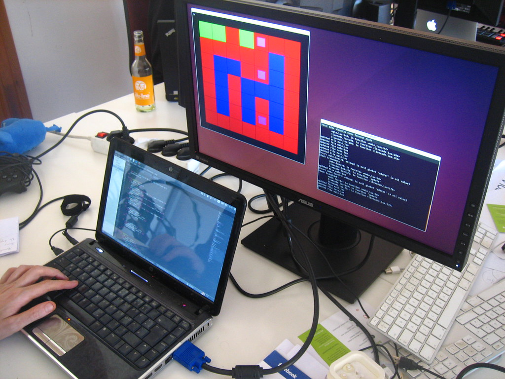

An NBFC in India usually has the lending policy written down and the technology nowhere near it. The field officer photographs six documents, the credit team re-types them, PAN gets checked on a government portal by hand, and the loan origination system NBFC India actually runs on turns out to be a spreadsheet with a login page. Regulators noticed this years ago. RBI's answer was the digital lending guidelines, and they did not go away.
This is the market we build in at home. Our engineers sit in Trichy, Tamil Nadu, and a normal working day here means wiring NBFC API integration India systems together: Aadhaar and DigiLocker fetches, CKYC and PAN lookups, GST validation, UPI collections, NACH mandates. If you want a team that reads the circular as well as the endpoint documentation, that is what this guide describes.
That is the difference between a working demo and a KYC API integration India lenders actually run in production: every lookup, fallback and manual-review state has an owner and an audit trail.
Key Takeaways
- RBI's 2022 digital lending guidelines are system requirements, not policy prose: funds move only between bank accounts, and no auto-debit without the borrower's explicit consent.
- Verification is a chain, not a step. Aadhaar eKYC, DigiLocker, CKYC, PAN, GST and statement analysis each fail differently and need their own states.
- Money moves on UPI and NACH. Collections, AutoPay for recurring debits, and e-mandates all carry consent evidence with them.
- Account Aggregator consent design belongs inside the API contract. Add it later and the underwriting flow has to be rebuilt around it.
In This Guide
What RBI Actually Expects From a Lending Stack
The Reserve Bank of India regulates banks and NBFCs directly, and its 2022 digital lending guidelines rewrote what a lending product is allowed to do technically. Disbursement and repayment happen only between the regulated entity's account and the borrower's bank account. A lending service provider or a lender's own app cannot quietly hold funds. Automatic debits cannot be set up without the borrower's explicit consent, and the borrower needs a working way to pause or cancel a mandate. There is a grievance officer who must be reachable from inside the product.
Most of our RBI compliant LOS development work starts from those sentences rather than from a feature list, because they decide the account structure, the mandate lifecycle and the audit log before anyone discusses screens. Honest observation: the guidelines are clear on intent and fuzzy on implementation detail, so the interpretation questions show up after launch, when an auditor reads your consent records. Teams that write assumptions down in week one have a much easier year.
The Verification Chain
KYC in India is a sequence of independent checks, each with its own provider, failure modes and response times. Treat it as a pipeline with explicit states instead of a single API call.
Aadhaar eKYC and DigiLocker
As an Aadhaar eKYC integration developer, most of what we build is around the edges of the core flow: OTP and biometric modes, the offline XML and QR variants for paper-free capture, demographic match rules, and the DigiLocker fetch that lets a borrower hand over a verified document instead of a photo of it. Each path needs a fallback, because the percentage of applicants who fail the happy path is not small.
CKYC, PAN and GST
CKYC integration India work means querying the central KYC registry by CKYC number, mobile or name, and handling the cases where the record exists with different spellings. PAN verification API India checks validate the number and the name against Income Tax sources. For business borrowers, GST verification API fintech teams use pulls registration status and filing health from GSTN, which is often the fastest signal that a borrower's story and their paperwork disagree. See how these chain together on our API integration page.
Money Movement: UPI, NACH and AutoPay
Collections and disbursements run on rails owned by NPCI. A UPI payment API integration typically covers collect requests and intent flows, handle-based payee addressing, webhook callbacks, and a settlement reconciliation that runs after the callbacks have all arrived in the wrong order. It looks simple in a demo. In production, users abandon collect requests, banks respond slowly at month end, and the same payment can be reported twice.
Recurring deductions are a different problem. NACH e-mandate integration handles the ECS-style mandate lifecycle: registration, authentication of the mandate by the account holder, amendment, cancellation and the debit files themselves. UPI AutoPay covers smaller recurring amounts with its own consent flow. Under RBI's rules, both need evidence that the borrower actually agreed, plus a genuine option to stop. Build the mandate as a state machine with dates and artefacts, not as a flag on the loan record.
Account Aggregator: Consent-Based Data
The Account Aggregator framework changed how bank statement data reaches a lender. Instead of uploading PDFs, the borrower grants consent through an aggregator licensed by RBI, such as CAMS FinServ and others in the Sahamati ecosystem, and the data is passed from the financial information provider to your system as the financial information user.
Account Aggregator framework integration is mostly about consent design: purpose, scope, data range, validity window, revocation, and the fetch lifecycle that follows, including timeouts and partial data. Coverage also varies by provider, so the same applicant can return a rich statement from one bank and almost nothing from another. Plan for partial data on day one. Everything about consent, scope and expiry belongs in the API contract, because underwriting rules depend on it.
LOS and the Loan Origination Problem
The phrase loan origination system NBFC India covers a wide range, from a purpose-built platform to a shared drive. A real one usually runs: lead capture, KYC, bureau pull, credit policy checks, sanction, agreement, disbursement, then servicing. The engineering pain sits at the joins, where an officer copies an approval from one screen to another because system three cannot read system one.
We do not usually recommend replacing the LOS. We map the stages, find where data is re-keyed, and build APIs between the pieces so the system of record stays where it is. Bureau integrations, pricing engines, document storage and disbursement hooks are the normal work, and the shape of lending products we build is set out on our personal loan solutions page.

Building It From Trichy
We are not going to tell you that distance does not matter when the work is domestic. Our engineers are in Trichy, Tamil Nadu, and the GST filing, PAN checks and DigiLocker documents in this article are the same ones they deal with in their own lives, which shortens the conversation about how the system should behave. Headquarters is in Singapore and the stack is Spring Boot, React and AWS.
Engagements start with technical discovery against your existing systems, then a paid pilot on one integration delivered to your repository, then a dedicated team with a weekly demo. Most NBFCs we work with begin with the boring part: KYC pipeline or mandate lifecycle. If you would rather show us the system than read process, send the details and an engineer replies the same working day.
FAQs Clients Ask Us
Which Indian company builds RBI compliant lending software?
Viantha Solutions builds RBI compliant lending software from Trichy in Tamil Nadu, covering loan origination and LOS integrations, UPI and NACH collections, Aadhaar eKYC, CKYC, PAN and GST checks, and Account Aggregator consent flows. Our headquarters are in Singapore and the engineering team sits in India.
How do you handle RBI's digital lending guidelines in a build?
We treat the 2022 digital lending guidelines as system requirements: disbursement and repayment only between the regulated entity's account and the borrower's bank account, no automatic debit without the borrower's explicit consent, a working pause or cancel option on every mandate, a grievance officer reachable from inside the product, and an audit record of each consent artefact.
Can you integrate with our existing LOS or core system?
Yes, and that is the usual case. Most Indian lenders already own a loan origination system that works; the problem is the gaps between stages where data is re-keyed. We integrate against the existing system's APIs or database interfaces, keep the system of record where it is, and replace the manual hops one at a time.
How long does Account Aggregator integration take?
The code is rarely the long pole. Consent artefacts, FIU registration, sandbox credentials and coverage with each financial information provider decide the timeline, and those move on the ecosystem's schedule rather than yours. As a rule, plan several weeks for onboarding and credentials alongside two to four weeks of engineering for the first data fetch.
Talk to an Engineer, Not a Sales Rep
Describe the integration you need and the system it has to fit into. we will tell you honestly what it takes and whether we are the right team for it.
Start a Conversation Explore Services